As regards the flight controller board, however, they are started from the version made previously with a goal: to obtain a board the most compact as possible.
Compared to the first version, I made the following changes:
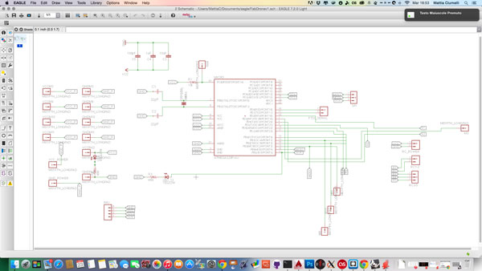
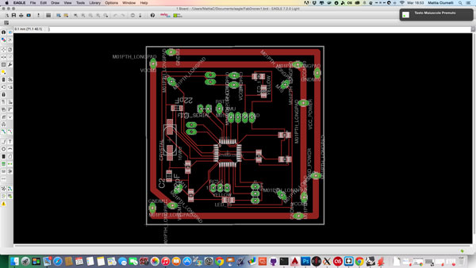
this is the pinout of the board
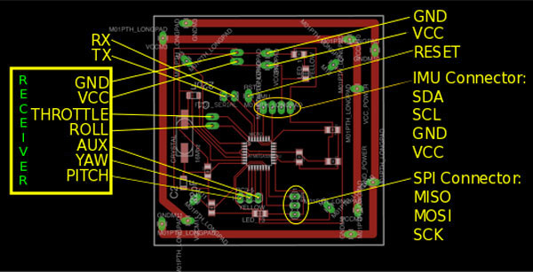
This is the .png exported from Eagle
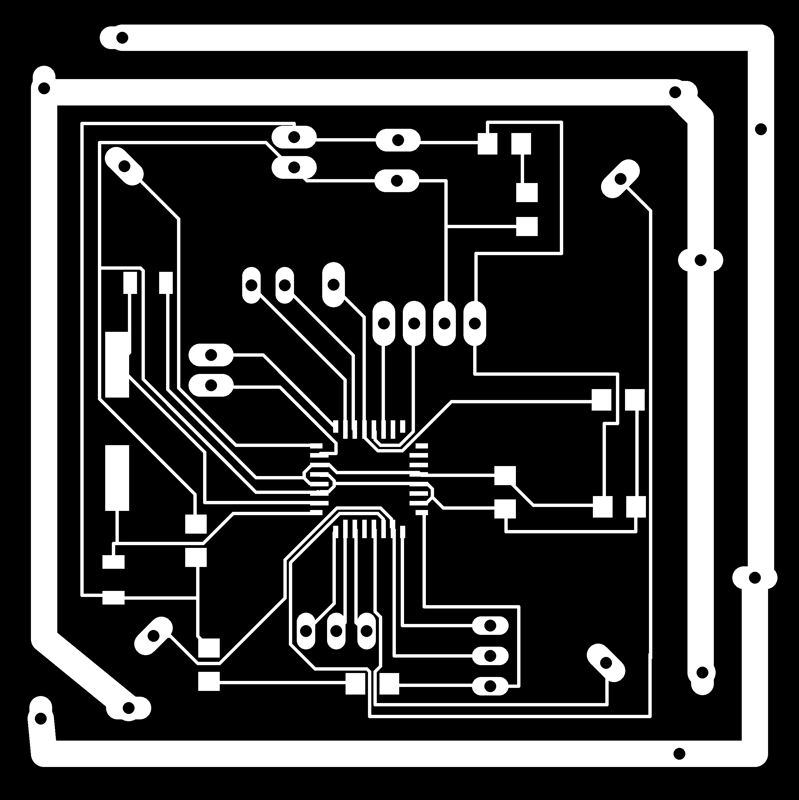
Once exported from Eagle, I imported into Inkscape, add the line for cuts and then I lasered the board.
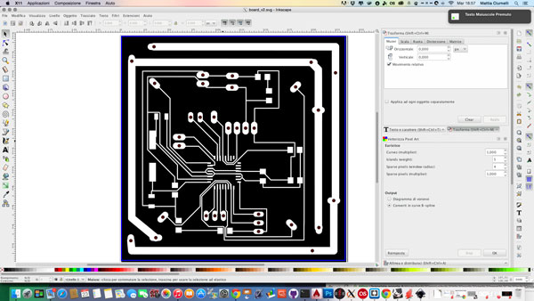
Once ready the board, I soldered the components and the cables for the connections with the ESC, the battery and for the power from the ESC.
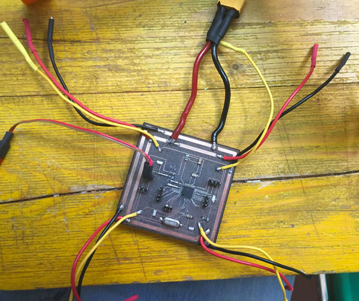
To avoid soldering the wires on the board every time I used some 2mm banana plug for the connection to ESC, and a 2 pin connector for the power
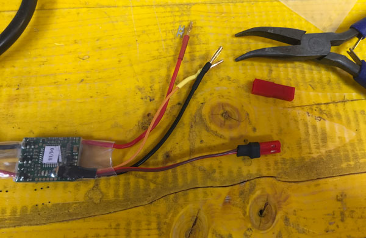
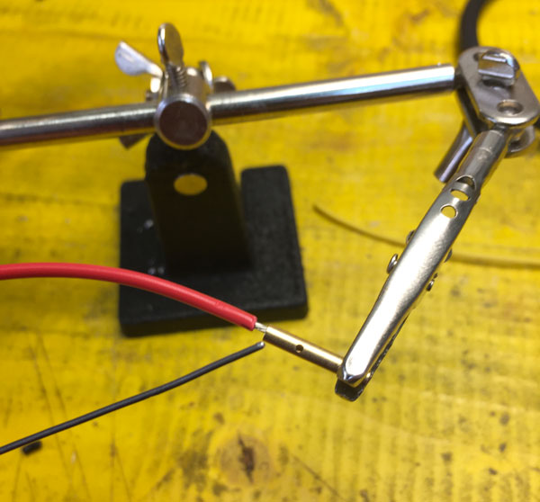
The last thing I have soldered was the IMU, which is have I soldered directly under the board, without using pin header.
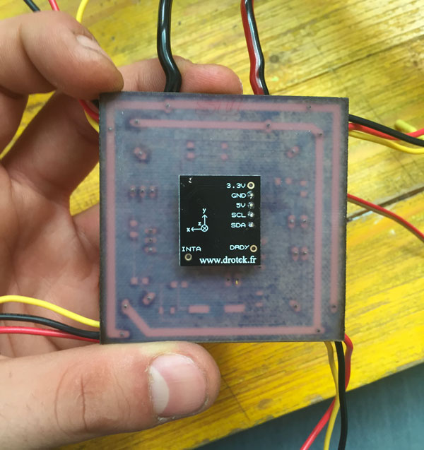
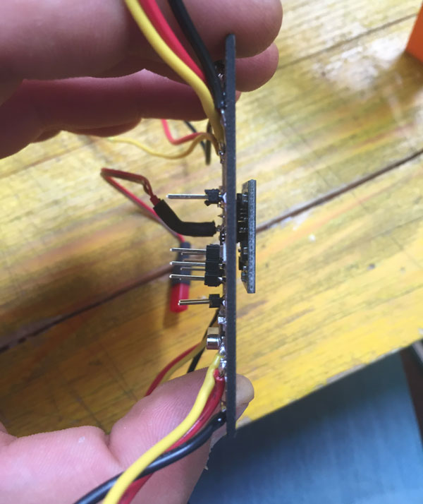
Once finished solder all, I burn the bootloader on the board using the FabISP, using the pin MISO-MOSI-SCK-RESET. After that before upload the multiwii sketch on it, i have uncommented the pieces of code in the file "config.h" for configure the quadcopter.
First you have to define the kind of quadcopter
/************************** The type of multicopter ****************************/
//#define GIMBAL
//#define BI
//#define TRI
//#define QUADP
#define QUADX
//#define Y4
//#define Y6
//#define HEX6
//#define HEX6X
//#define HEX6H // New Model
//#define OCTOX8
//#define OCTOFLATP
//#define OCTOFLATX
//#define FLYING_WING
//#define VTAIL4
//#define AIRPLANE
//#define SINGLECOPTER
//#define DUALCOPTER
//#define HELI_120_CCPM
//#define HELI_90_DEG
after you have to define the minimum throttle value
/**************************** Motor minthrottle *******************************/
/* Set the minimum throttle command sent to the ESC (Electronic Speed Controller)
This is the minimum value that allow motors to run at a idle speed */
//#define MINTHROTTLE 1300 // for Turnigy Plush ESCs 10A
//#define MINTHROTTLE 1120 // for Super Simple ESCs 10A
//#define MINTHROTTLE 1064 // special ESC (simonk)
//#define MINTHROTTLE 1050 // for brushed ESCs like ladybird
#define MINTHROTTLE 1050 // (*) (**)
and at last you have to define what kind of IMU you are using
/*************************** Combined IMU Boards ********************************/
/* if you use a specific sensor board:
please submit any correction to this list.
Note from Alex: I only own some boards, for other boards, I'm not sure, the info was gathered via rc forums, be cautious */
//#define FFIMUv1 // first 9DOF+baro board from Jussi, with HMC5843
//#define FFIMUv2 // second version of 9DOF+baro board from Jussi, with HMC5883
//#define FREEIMUv1 // v0.1 & v0.2 & v0.3 version of 9DOF board from Fabio
//#define FREEIMUv03 // FreeIMU v0.3 and v0.3.1
//#define FREEIMUv035 // FreeIMU v0.3.5 no baro
//#define FREEIMUv035_MS // FreeIMU v0.3.5_MS
//#define FREEIMUv035_BMP // FreeIMU v0.3.5_BMP
//#define FREEIMUv04 // FreeIMU v0.4 with MPU6050, HMC5883L, MS561101BA
//#define FREEIMUv043 // same as FREEIMUv04 with final MPU6050 (with the right ACC scale)
//#define NANOWII // the smallest multiwii FC based on MPU6050 + pro micro based proc
//#define PIPO // 9DOF board from erazz
//#define QUADRINO // full FC board 9DOF+baro board from witespy with BMP085 baro
//#define QUADRINO_ZOOM // full FC board 9DOF+baro board from witespy second edition
//#define QUADRINO_ZOOM_MS// full FC board 9DOF+baro board from witespy second edition
//#define ALLINONE // full FC board or standalone 9DOF+baro board from CSG_EU
//#define AEROQUADSHIELDv2
//#define ATAVRSBIN1 // Atmel 9DOF (Contribution by EOSBandi). requires 3.3V power.
//#define SIRIUS // Sirius Navigator IMU
//#define SIRIUSGPS // Sirius Navigator IMU using external MAG on GPS board
//#define SIRIUS600 // Sirius Navigator IMU using the WMP for the gyro
//#define SIRIUS_AIR // Sirius Navigator IMU 6050 32U4 from MultiWiiCopter.com
//#define SIRIUS_AIR_GPS // Sirius Navigator IMU 6050 32U4 from MultiWiiCopter.com with GPS/MAG remote located
//#define SIRIUS_MEGAv5_OSD // Paris_Sirius™ ITG3050,BMA280,MS5611,HMC5883,uBlox http://www.Multiwiicopter.com
//#define MINIWII // Jussi s MiniWii Flight Controller
//#define MICROWII // MicroWii 10DOF with ATmega32u4, MPU6050, HMC5883L, MS561101BA from http://flyduino.net/
//#define CITRUSv2_1 // CITRUS from qcrc.ca
//#define CHERRY6DOFv1_0
//#define DROTEK_10DOF // Drotek 10DOF with ITG3200, BMA180, HMC5883, BMP085, w or w/o LLC
//#define DROTEK_10DOF_MS // Drotek 10DOF with ITG3200, BMA180, HMC5883, MS5611, LLC
//#define DROTEK_6DOFv2 // Drotek 6DOF v2
//#define DROTEK_6DOF_MPU // Drotek 6DOF with MPU6050
#define DROTEK_10DOF_MPU//
//#define MONGOOSE1_0 // mongoose 1.0 http://store.ckdevices.com/
//#define CRIUS_LITE // Crius MultiWii Lite
//#define CRIUS_SE // Crius MultiWii SE
//#define CRIUS_SE_v2_0 // Crius MultiWii SE 2.0 with MPU6050, HMC5883 and BMP085
//#define OPENLRSv2MULTI // OpenLRS v2 Multi Rc Receiver board including ITG3205 and ADXL345
//#define BOARD_PROTO_1 // with MPU6050 + HMC5883L + MS baro
//#define BOARD_PROTO_2 // with MPU6050 + slave MAG3110 + MS baro
//#define GY_80 // Chinese 10 DOF with L3G4200D ADXL345 HMC5883L BMP085, LLC
//#define GY_85 // Chinese 9 DOF with ITG3205 ADXL345 HMC5883L LLC
//#define GY_86 // Chinese 10 DOF with MPU6050 HMC5883L MS5611, LLC
//#define GY_88 // Chinese 10 DOF with MPU6050 HMC5883L BMP085, LLC
//#define GY_521 // Chinese 6 DOF with MPU6050, LLC
//#define INNOVWORKS_10DOF // with ITG3200, BMA180, HMC5883, BMP085 available here http://www.diymulticopter.com
//#define INNOVWORKS_6DOF // with ITG3200, BMA180 available here http://www.diymulticopter.com
//#define MultiWiiMega // MEGA + MPU6050+HMC5883L+MS5611 available here http://www.diymulticopter.com
//#define PROTO_DIY // 10DOF mega board
//#define IOI_MINI_MULTIWII// www.bambucopter.com
//#define Bobs_6DOF_V1 // BobsQuads 6DOF V1 with ITG3200 & BMA180
//#define Bobs_9DOF_V1 // BobsQuads 9DOF V1 with ITG3200, BMA180 & HMC5883L
//#define Bobs_10DOF_BMP_V1 // BobsQuads 10DOF V1 with ITG3200, BMA180, HMC5883L & BMP180 - BMP180 is software compatible with BMP085
//#define FLYDUINO_MPU // MPU6050 Break Out onboard 3.3V reg
//#define CRIUS_AIO_PRO
//#define DESQUARED6DOFV2GO // DEsquared V2 with ITG3200 only
//#define DESQUARED6DOFV4 // DEsquared V4 with MPU6050
//#define LADYBIRD
//#define MEGAWAP_V2_STD // available here: http://www.multircshop.com
//#define MEGAWAP_V2_ADV
//#define HK_MultiWii_SE_V2 // Hobbyking board with MPU6050 + HMC5883L + BMP085
//#define HK_MultiWii_328P // Also labeled "Hobbybro" on the back. ITG3205 + BMA180 + BMP085 + NMC5583L + DSM2 Connector (Spektrum Satellite)
//#define RCNet_FC // RCNet FC with MPU6050 and MS561101BA http://www.rcnet.com
//#define RCNet_FC_GPS // RCNet FC with MPU6050 + MS561101BA + HMC5883L + UBLOX GPS http://www.rcnet.com
//#define FLYDU_ULTRA // MEGA+10DOF+MT3339 FC
//#define DIYFLYING_MAGE_V1 // diyflying 10DOF mega board with MPU6050 + HMC5883L + BMP085 http://www.indoor-flying.hk
//#define MultiWii_32U4_SE // Hextronik MultiWii_32U4_SE
//#define MultiWii_32U4_SE_no_baro // Hextronik MultiWii_32U4_SE without the MS561101BA to free flash-memory for other functions
//#define Flyduino9DOF // Flyduino 9DOF IMU MPU6050+HMC5883l
//#define Nano_Plane // Multiwii Plane version with tail-front LSM330 sensor http://www.radiosait.ru/en/page_5324.html
After defining these parameters, we can upload the MultiWii on our board always using the ISP connection. Once programmed the board, i have connected to the PC via cable FTDI, using TX-RX-GND, and I checked if the IMU data was displayed in the GUI of the MultiWii.
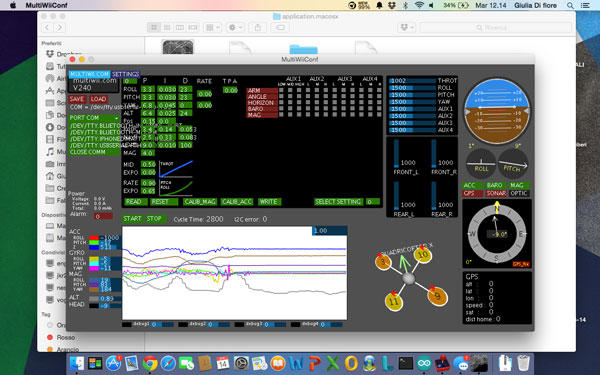
The next step is to assemble all the pieces of the drone and try to fly.